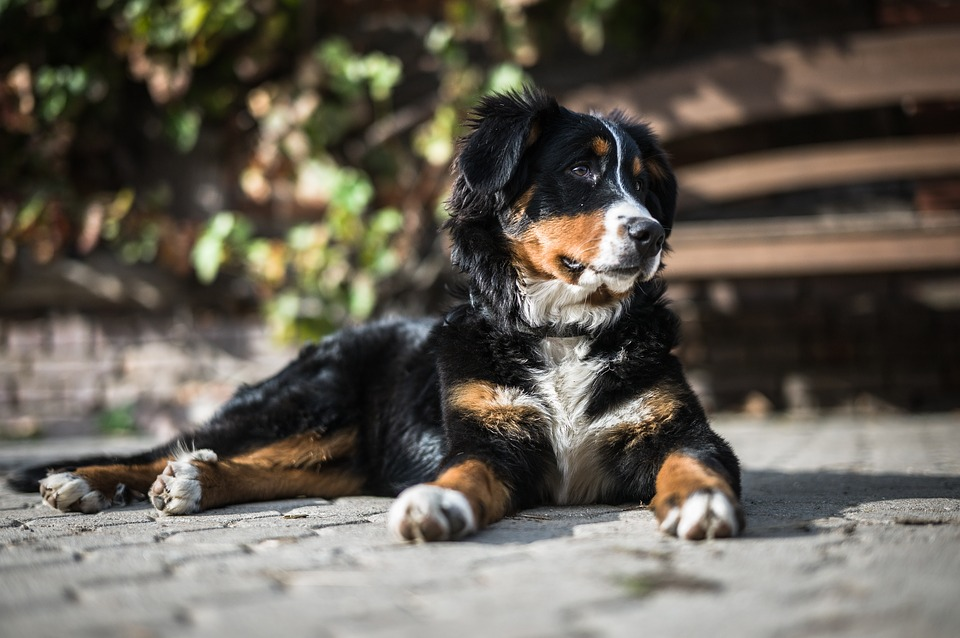

Bernese Mountain Dog

The Bernese Mountain Dog is an extremely versatile working dog from the farmlands of Switzerland.
- Scientific Name: Canis lupus familiaris
- Average Length: 60 - 70 centimeters
- Average Lifespan: 6-8 years
- Habitat: Farmlands of Switzerland
The Bernese Mountain Dog is a large-sized breed of dog, one of the four breeds of Sennenhund-type dogs from the Swiss Alps. The name Sennenhund is derived from the German Senne ("alpine pasture") and Hund ("dog"), as they accompanied the alpine herders and dairymen called Senn.